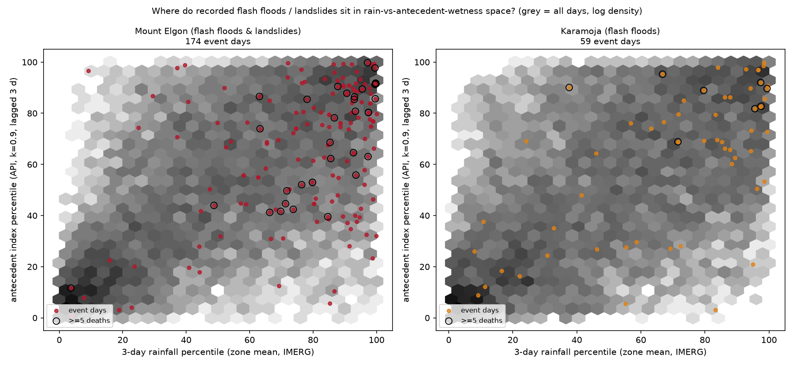
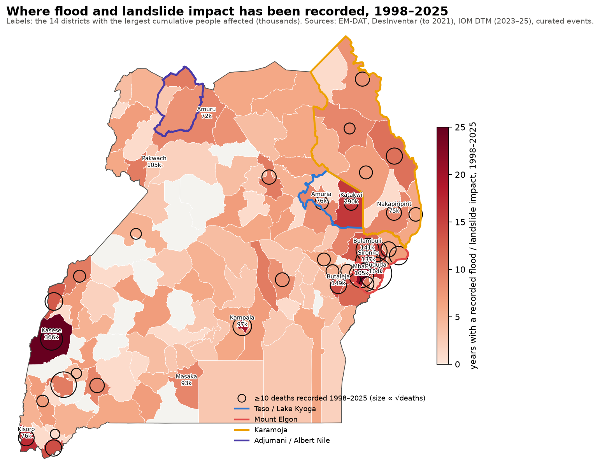
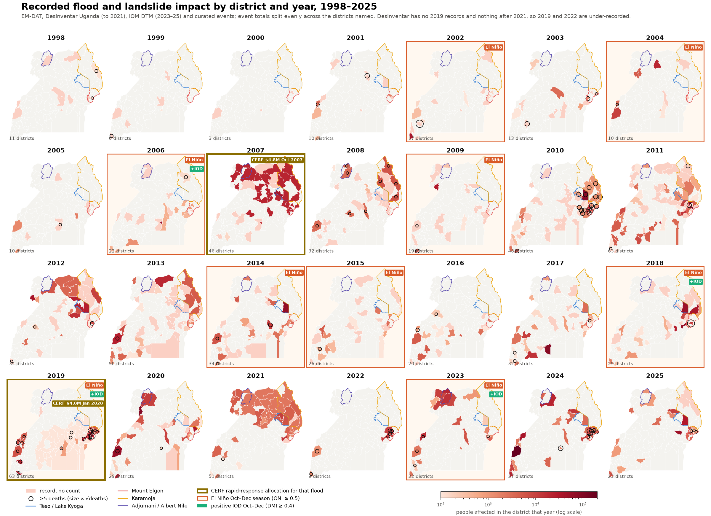

Results so far
Interim analysis outputs. Each figure and table is produced by a script in the repo; nothing here is a trigger yet.
Teso / Kyoga — what does GloFAS G5196 cover?
GloFAS v4 reanalysis discharge at the G5196 pixel against each candidate district's FloodScan flood-extent daily mean, 1999-2020: best lagged correlation of daily anomalies in the Aug–Dec flood season (the shared seasonal cycle removed), and the conditional probability that discharge is over its 2-year level when the district's extent (mean, or wettest pixel for small wetlands) is over its own 2-year level. Covered = anomaly correlation ≥ 0.45 and P ≥ 0.5 (red outline); dashed = the point's own catchment.

| district | membership | best lag (d) | best corr | P(Q>2yr | extent>2yr) | P(extent>2yr | Q>2yr) | covered |
|---|---|---|---|---|---|---|
| Amuria | core | 1 | 0.62 | 0.54 | 0.30 | True |
| Katakwi | core | 7 | 0.54 | 0.61 | 0.27 | True |
| Soroti | tier2 | 19 | 0.52 | 0.15 | 0.04 | True |
| Serere | tier2 | 30 | 0.49 | 0.05 | 0.01 | True |
| Ngora | tier2 | 30 | 0.49 | 0.51 | 0.21 | True |
| Bukedea | excluded | 0 | 0.45 | 0.02 | 0.00 | False |
| Kumi | excluded | 24 | 0.38 | 0.02 | 0.00 | False |
| Kapelebyong | core | 2 | 0.35 | 0.63 | 0.11 | False |
| Pallisa | excluded | 30 | 0.32 | 0.02 | 0.00 | False |
| Alebtong | excluded | 0 | 0.13 | 0.07 | 0.01 | False |
| Kalaki | excluded | 6 | 0.11 | 0.00 | 0.00 | False |
| Dokolo | excluded | 0 | 0.11 | 0.04 | 0.00 | False |
| Butebo | excluded | 30 | 0.08 | 0.01 | 0.00 | False |
| Kibuku | excluded | 0 | 0.06 | 0.07 | 0.03 | False |
| Kaberamaido | excluded | 0 | 0.06 | 0.00 | 0.00 | False |
| Otuke | excluded | 0 | 0.05 | 0.17 | 0.03 | False |
| Butaleja | excluded | 0 | 0.04 | 0.05 | 0.01 | False |
| Amolatar | excluded | 0 | 0.04 | 0.00 | 0.00 | False |
| Budaka | excluded | 0 | 0.03 | 0.03 | 0.00 | False |
Reading, and what it changed: the point speaks for Amuria and Katakwi at 0–7 days, and for Soroti, Ngora and Serere with a 19–30 day lag as the Awoja–Bisina wetlands fill; Kapelebyong holds the point and its headwaters (too little extent for a correlation, but its rare floods coincide with high discharge, P 0.73). Nothing further out passes: Kumi, Bukedea, Pallisa, Butaleja and the Mpologoma districts, and the whole Kyoga north shore (Kaberamaido, Kalaki, Amolatar, Dokolo, Otuke, Alebtong) have correlations below 0.45 and no threshold agreement. The zone was redrawn accordingly: six core districts, no candidates. Reforecast-based thresholds and the backtest follow once the EWDS download completes.
Adjumani / Albert Nile — are the floods lake-level events?
Monthly altimetry levels of Lakes Victoria, Kyoga and Albert (NASA Global Water Monitor) against every dated flood record we hold for Adjumani, Moyo, Obongi, Nebbi and Pakwach (DesInventar datacards 1992–2021, EM-DAT, and curated 2019–2024 events).

Reading: two regimes. The large, well-documented backwater floods (Pakwach and Obongi 2020, 2021, Obongi/Palorinya Oct–Nov 2024) sit above the 90th percentile of Kyoga and Albert levels, with the Victoria → Kyoga → Albert chain giving months of lead. Most smaller DesInventar records (Moyo 2008, 2011, 2014; Nebbi 2007–2014) occurred at ordinary lake levels and are local-rain / tributary events. The zone therefore needs a lake-level leg and a rainfall leg.
Mount Elgon and Karamoja — how much rain falls before the recorded events?
Link 2 of the flash-flood chain (observed rain → impact), on IMERG daily rainfall averaged over each zone's core districts, 1998–2026: for every day-dated impact record in the zone (DesInventar datacards, EM-DAT, curated events) the 3-day rainfall in the three days before the event, as a percentile of all days.

Reading: events do happen on wet days — the median pre-event 3-day rainfall sits at the 86th percentile on Elgon and the 83rd in Karamoja, and the deadly events (≥5 deaths) at the 88th — but almost never on extreme days: only 2 % of events follow 3-day zone-mean rainfall above its 2-year level, and of the 17 zone-wide episodes above that level since 1998 only one coincided with a recorded event. A zone-mean rainfall return-period threshold of the usual kind would therefore miss nearly everything and mostly activate on non-events. The trigger needs a lower rainfall bar combined with antecedent wetness (the landslide literature's 'prolonged low-intensity rain'), finer spatial resolution (district or slope-unit rather than zone mean), and an explicit statement of the false-alarm ratio that comes with it. The forecast leg (CHIRPS-GEFS vs IMERG) follows when its table lands.
Does antecedent wetness help?
Soil moisture is the missing variable in the previous result: landslides and flash floods follow moderate rain on saturated ground. Until the ERA5-Land soil-moisture download lands, an antecedent precipitation index from IMERG stands in for it (APIt = 0.9·APIt−1 + Pt, an e-folding time of about ten days, lagged so it describes the ground before the 3-day rain window). Grey: all days since 1998; points: event days; circles: events with five or more deaths.

Reading: events cluster in the wet–wet corner, and the deadly ones more so (median antecedent percentile 78 on Elgon, 89 in Karamoja). A trigger grid over rain and antecedent thresholds (tables outputs/flash_trigger_grid_*.csv, zone-level and any-district variants) shows what that buys: at a fixed rain threshold, requiring the antecedent index above its 85th percentile roughly doubles the share of activations that have a recorded event within two days (for example on Elgon, any-district 3-day rain ≥ 95th percentile: 8 % → 14 %), while keeping about half of the deadly events. But no combination gets precision above about 15 %, and catching most deadly events costs 10–25 activations a year. Two things follow. First, a daily rainfall trigger at zone scale is a readiness-tier signal at best, not an action trigger; the action decision needs something sharper — slope-unit susceptibility, a landslide-model layer, community gauges, or the forecast's own probability. Second, the impact record is incomplete (DesInventar stops in 2021 and misses minor events), so true precision is somewhat higher than measured — but not by the factor needed. ERA5-Land soil moisture will replace the proxy and be re-tested here.
Where impact has been recorded
All four impact sources merged to district-years (EM-DAT, DesInventar to 2021, IOM DTM 2023–25, curated events). First the whole record on one map: how many years each district has a recorded flood or landslide impact, cumulative deaths as circles, the 14 largest cumulative caseloads labelled, and the zones outlined.

Then one map per year. Districts are coloured by people affected that year (log scale; pale pink = a record without a count), circles mark five or more deaths. Panels are framed for the two CERF rapid-response allocations (gold: USD 4.8 M in Oct 2007, USD 4.0 M in Jan 2020 for the Nov–Dec 2019 floods) and for El Niño Oct–Dec seasons (orange, ONI ≥ 0.5), with a tag for positive-IOD seasons. The 2007 Teso floods, the 2010 to 2013 run, 2018, 2020 and the 2024 to 2025 El Niño years stand out; 2019 and 2022 are under-recorded because DesInventar has no 2019 cards and stops in 2021.

Two corrections to the raw sources: a few DesInventar datacards carry national totals against one district (Agago 3,000,000 in July 2007; Bududa 300,000 in March 2010 against EM-DAT's 12,795), so counts of 100,000 or more per card are dropped while the record is kept; and DesInventar double-counts deaths across cards, so EM-DAT or curated death tolls take precedence where they exist. Table: outputs/impact_district_year.csv.
How much of the recorded impact do the zones cover?
Every district classified as zone core, zone tier 2, partner-only (in a standing flood AA of IFRC, WFP, CRS/Caritas or DRC but not in our zones) or uncovered, with the 1998–2025 record summed per class.
| class | districts | people affected | % affected | deaths | % deaths | district-years with a record | % district-years |
|---|---|---|---|---|---|---|---|
| zone core | 24 | 1,410,237 | 39 | 1,065 | 56 | 212 | 28 |
| zone tier 2 | 12 | 516,093 | 14 | 132 | 7 | 81 | 11 |
| partner only | 5 | 640,921 | 18 | 276 | 14 | 85 | 11 |
| uncovered | 94 | 1,056,547 | 29 | 439 | 23 | 381 | 50 |
Reading: the four zones with their second tiers hold just over half of all recorded people affected and about two thirds of recorded deaths; the partner-only districts (Kasese, Kisoro, Ntoroko, Bundibugyo under WFP; Kampala under the IFRC EAP) add another sixth of affected. The uncovered remainder is spread thinly over about ninety districts with no single large gap: the biggest are Masaka, Amuru, Kabale, Otuke and Zombo, each under 100,000 cumulative affected and mostly single-source DesInventar records.
Impact record assembled
- EM-DAT — 47 flood and wet mass-movement events 2001–2024, exploded to districts.
- DesInventar Uganda — about 1,500 flood, 370 landslide and 130 rainstorm datacards, day-dated and district-matched, 1933–2021 (no 2019 records; ends 2021).
- IOM DTM — affected people by district and reporting round, Oct 2023 – Oct 2025 (country-team compilation).
- Curated events — dated Elgon and Karamoja flash floods / landslides and West Nile floods 2007–2025, each with a source.
Data built for the analysis
- FloodScan SFED and IMERG rainfall, daily per district (mean and max), 1998–present.
- CHIRPS-GEFS 5-day rainfall forecast per district, daily issues 2000 – Jul 2026 (the forecast leg of the flash-flood skill chain).
- GloFAS v4 reanalysis 1999–2024 (Uganda box) and G5196 reforecast 2003–2023 (leads 1–15 days).
- Lake Victoria, Kyoga and Albert altimetry levels.
Uganda is capped at admin 1 in the team rasterstats database, so the district series are computed from the processed rasters directly.
Next
- Flash-flood skill chain for Elgon and Karamoja: CHIRPS-GEFS 5-day forecast vs IMERG, then observed rain vs the DesInventar / DTM / curated events.
- G5196: model-space return-period thresholds from the reforecast climatology; backtest of readiness (10–14 d) and action (3–7 d) windows against the 2007, 2011–2013, 2018 and 2025 Teso floods.
- Adjumani: lake-level leg (Kyoga/Albert percentile) plus rainfall leg; extend the Albert record back to 2002 via DAHITI/Hydroweb.
Generated 2026-09-03 by pipeline/build_pages.py in
OCHA-DAP/ds-aa-uga-flooding. Work in progress — not a trigger.